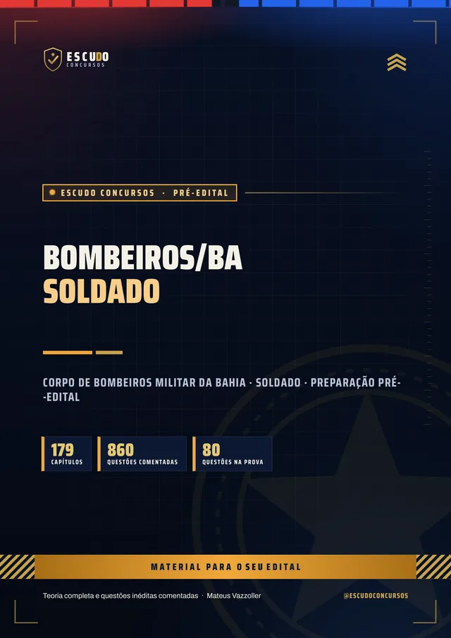
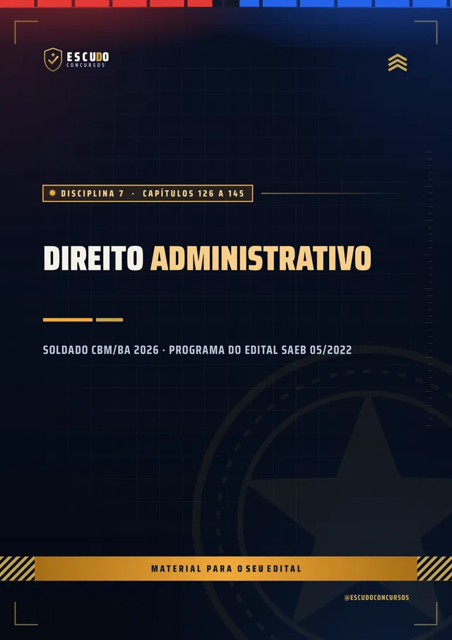
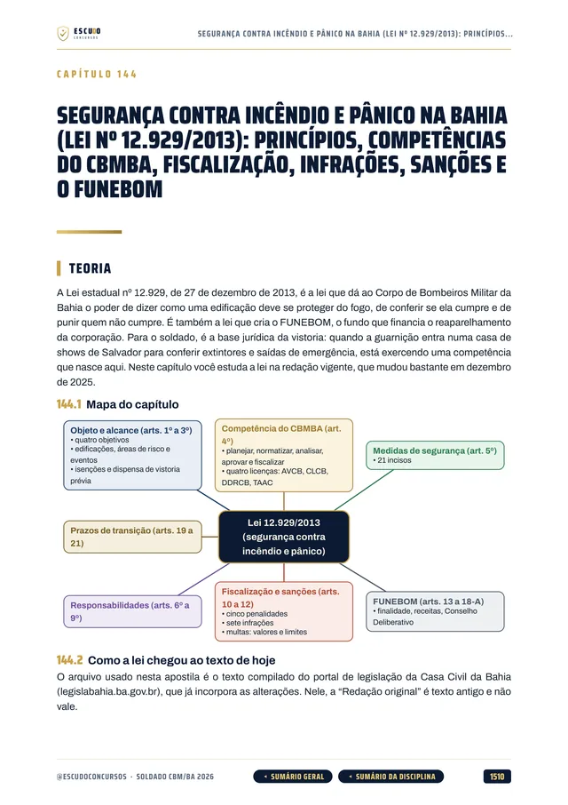
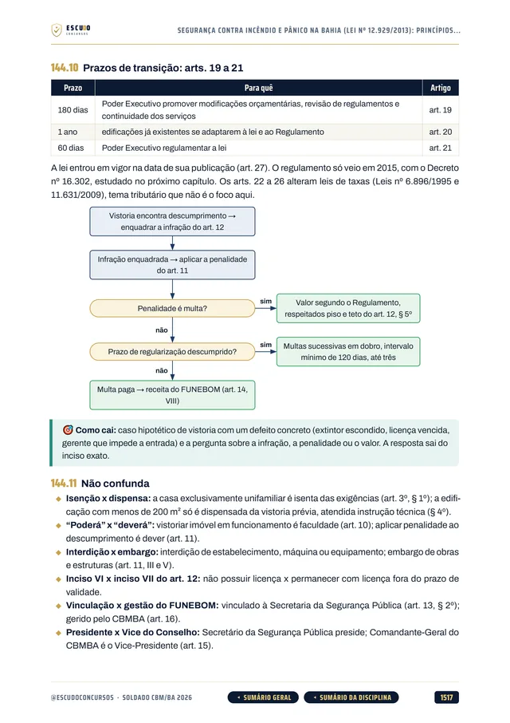
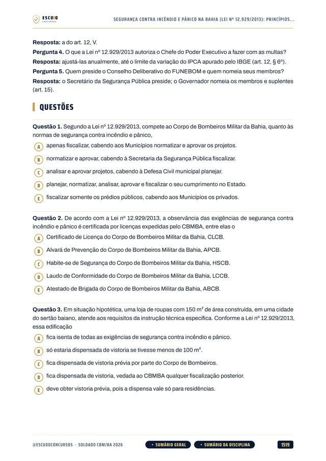
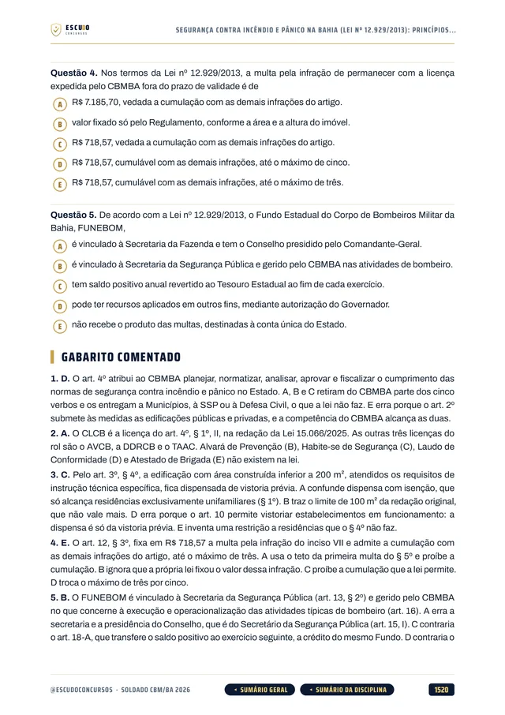
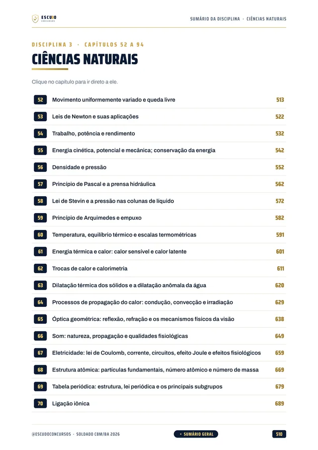
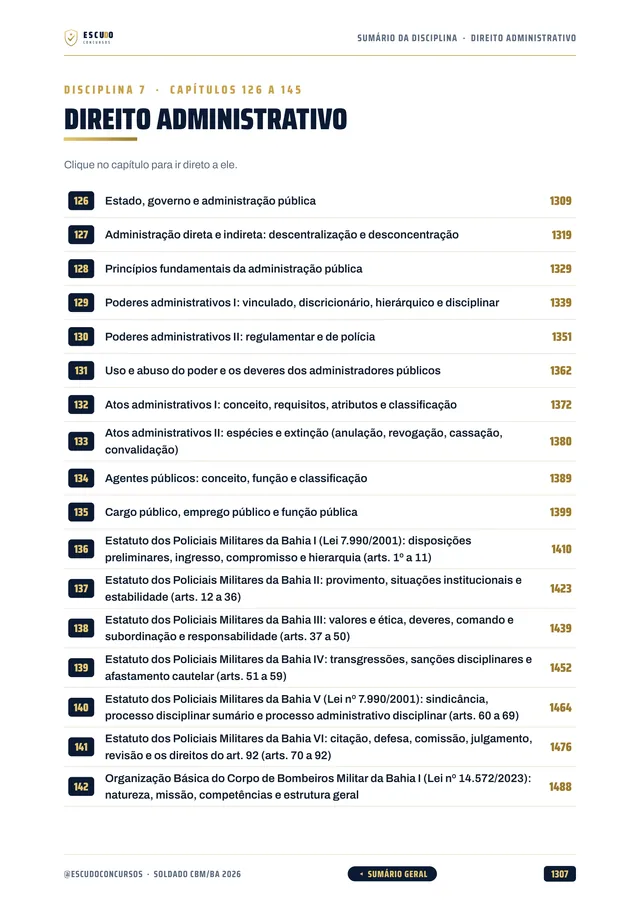
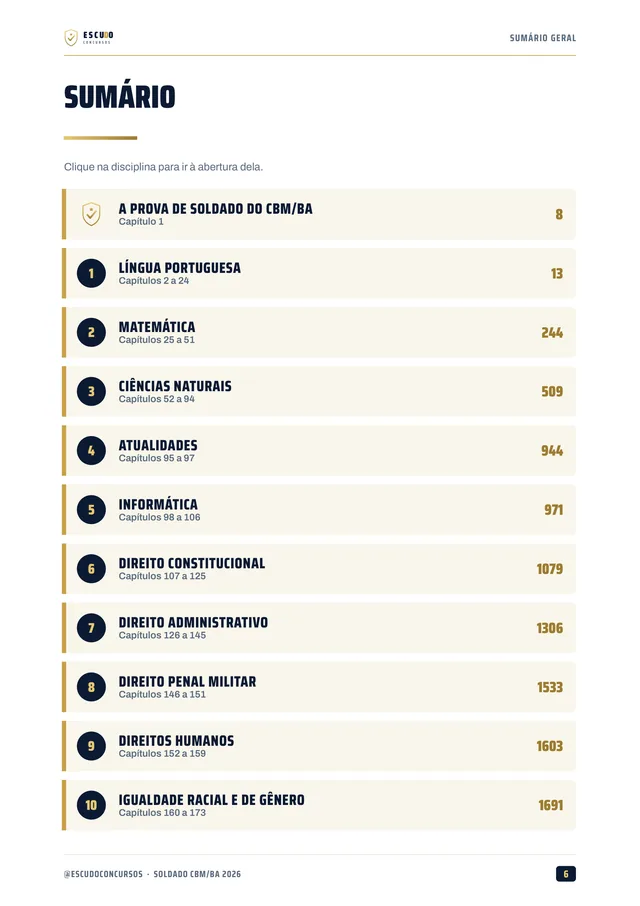
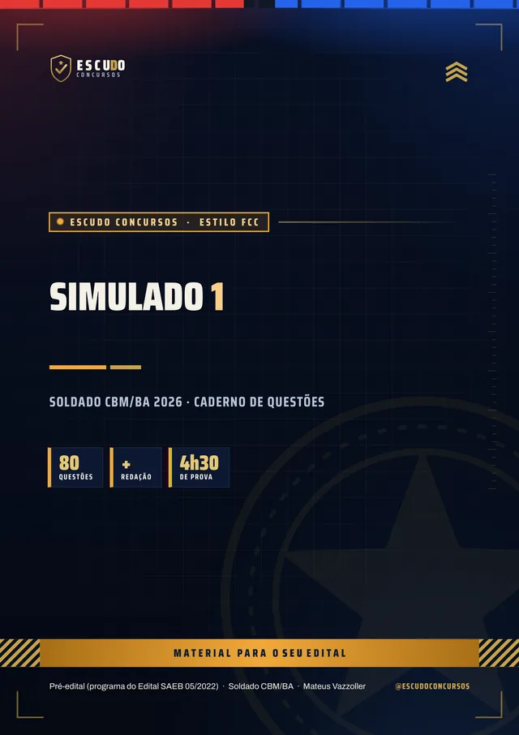

Simulado 1
No meio do caminho
Para medir onde você está e ajustar o estudo enquanto o edital não sai.
30 dias após a compra
Material independente, sem vínculo com o CBMBA nem com a FCC.


860questões
comentadas
ConcursoCBM/BA2026 · Soldado
Briefing
O governo da Bahia anunciou em 19/06/2026 o concurso do Corpo de Bombeiros Militar, com 600 vagas de soldado, mas o edital ainda não saiu e a banca não foi definida. Quem estuda agora estuda pelo programa do último edital, sem esperar. Curso feito sobre o Edital SAEB nº 05/2022 (FCC), na parte do CBMBA do Anexo II, item por item, com a legislação da Bahia na redação vigente em 24/11/2026 e questões de 5 alternativas com gabarito comentado.
Pré-edital: baseado no Edital SAEB nº 05/2022 (FCC). Concurso anunciado em 19/06/2026, com 600 vagas de soldado e banca ainda não definida. Atualização grátis quando sair o novo
de R$ 47 por 26% OFF
R$35
Preço de pré-venda com o cupom CBMBA35, até sair o edital. Quem compra agora recebe de graça a atualização para o edital novo. Pelo botão, o cupom já vai preenchido.
R$47
Curso completo, com acesso imediato.
Ainda não vai comprar? Receba o aviso quando sair o edital
Edital ainda não saiu
Deixe seu e-mail e o seu WhatsApp. No dia em que o edital sair, você recebe o resumo (vagas, salário, inscrições e o que mudou no programa) e um cupom só para quem está na lista. Sem spam: só o aviso do edital.
Seus dados ficam só com a ESCUDO e servem só para este aviso. Para sair da lista, é só responder o e-mail.
Terreno
O concurso
Em 19/06/2026, em comunicado oficial, o governo da Bahia anunciou concursos para a Polícia Militar e para o Corpo de Bombeiros Militar: 600 vagas de soldado e 60 de oficial no CBMBA. A imprensa de concursos noticiou a autorização das vagas em julho. Até a conferência de 24/11/2026, não havia edital, banca definida nem data de prova, e este curso não promete nenhuma. O edital pode sair em conjunto com o da PM-BA, como em 2022.
Por isso o curso segue o programa e o formato do último edital do cargo, o Edital SAEB nº 05/2022 (Curso de Formação de Soldados PM e BM), de 27/09/2022, organizado pela FCC, com 500 vagas para o CBMBA e 12.833 inscritos nelas. A prova foi aplicada em 22/01/2023: 80 questões de múltipla escolha, com cinco alternativas (A a E), mais uma redação de 20 a 30 linhas. O programa do CBMBA é próprio, diferente do da Polícia Militar: tem Ciências Naturais e a legislação dos Bombeiros.
Estudar agora pelo programa do último edital economiza meses. Quando o edital novo sair, a banca, o formato e o programa podem mudar: o programa será conferido item por item e o curso, ajustado.
| Bloco | Disciplinas | Questões |
|---|---|---|
| CG | Conhecimentos Gerais: Língua Portuguesa, Matemática, Ciências Naturais, Atualidades e Informática | 50 |
| CE | Conhecimentos Específicos: Direito Constitucional, Direito Administrativo (com a lei do CBMBA), Direito Penal Militar, Direitos Humanos e Igualdade Racial e de Gênero | 30 |
| 100 pontos (1,25 por questão). Habilitado quem soma 60 pontos. O edital não diz quantas questões vale cada disciplina. A redação (20 a 30 linhas, nota de 0 a 100, mínimo 60) é ensinada em 6 capítulos. É só referência: o edital novo pode mudar as regras. | 80 |
Atualização
Legislação da Bahia e dos Bombeiros
Organização Básica do CBMBA (Lei 14.572/2023): natureza, missão, competências, estrutura, órgãos de direção, apoio e execução e efetivo, em 2 capítulos. A Lei 13.202/2014, pedida no edital de 2022, foi revogada por ela, e o curso traz o quadro "o edital diz, a lei hoje diz".
Segurança contra incêndio e pânico: a Lei 12.929/2013 (competências do CBMBA, fiscalização, infrações, sanções e o FUNEBOM) e o Decreto 16.302/2015 (vistoria, AVCB, classificação das edificações, penalidades e recursos), em 2 capítulos, com o quadro dos pontos em que o decreto de 2015 diverge da lei alterada em 2025.
Estatuto dos Policiais Militares da Bahia (Lei 7.990/2001): os arts. 1º a 92, que valem para os bombeiros militares pelo art. 62 da Lei 14.572/2023, em 6 capítulos: hierarquia, provimento, valores e ética, deveres, transgressões e sanções disciplinares.
Ciências Naturais em 43 capítulos: Física (16), Química (17) e Biologia (10), do movimento e da hidrostática ao fogo e à combustão, às funções orgânicas, aos materiais, aos ecossistemas e às epidemias e endemias do Brasil, com problemas ao estilo da prova.
Constituição da Bahia, Direitos Humanos e Igualdade Racial e de Gênero: servidores militares e segurança pública estadual, 8 capítulos de Direitos Humanos e 14 de Igualdade Racial e de Gênero, do Estatuto da Igualdade Racial à Lei Maria da Penha.
Protocolo
O formato
Você estuda lendo, no seu ritmo, pela área de membros da Hotmart ou com os arquivos baixados. O curso segue o programa do CBMBA no último edital do cargo (Edital SAEB nº 05/2022), disciplina por disciplina, com a legislação federal e da Bahia conferida no texto oficial vigente em 24/11/2026. Quando sair o edital novo, vale o que ele disser.
Reconhecimento
Páginas reais do PDF
Toque numa página para ver em tamanho maior.





100% em PDF · Garantia de 7 dias · Pagamento pela Hotmart
Equipamento
O que você recebe
Curso em PDF organizado em 33 módulos (31 pelas disciplinas e redação e 2 de simulado), com 1.899 páginas no padrão visual ESCUDO, para ler no computador, no tablet, no celular ou no app da Hotmart. Não há videoaulas.
179 capítulos pelo programa do CBMBA no Edital SAEB nº 05/2022: Língua Portuguesa (23), Matemática (27), Ciências Naturais (43), Atualidades (3), Informática (9), Direito Constitucional (19), Administrativo (20), Penal Militar (6), Direitos Humanos (8), Igualdade Racial e de Gênero (14) e Redação (6), mais um capítulo de abertura sobre a prova e o plano de estudo.
860 questões inéditas com 5 alternativas, de (A) a (E), todas com gabarito comentado: por que a correta está correta e onde está o erro de cada uma das outras.
Ciências Naturais em 43 capítulos: Física, Química e Biologia pelo programa do edital, com a combustão, os materiais, os ecossistemas e as epidemias e endemias.

Direito Administrativo e a lei do CBMBA em 20 capítulos: a administração pública, o Estatuto dos Policiais Militares da Bahia, a Organização Básica do CBMBA (Lei 14.572/2023) e a segurança contra incêndio e pânico (Lei 12.929/2013 e Decreto 16.302/2015).

Teoria com recursos para memorizar: mapa de cada capítulo, pegadinhas, quadros "não confunda", revisão relâmpago e teste de memória no fim de cada capítulo.
Navegação clicável: do sumário você vai direto à disciplina e ao capítulo, e volta pelos botões do rodapé.

2 simulados inéditos de 80 questões de A a E, no quadro da prova de 2022 (50 de Conhecimentos Gerais e 30 de Específicos), cada um com caderno de comentários e proposta de redação com padrão de correção.

Plano de ação
Área de membros
| Módulo | Conteúdo | Liberação |
|---|---|---|
| M0 Comece aqui | Apresentação + capítulo 001 (como é a prova e como usar o curso). Bônus: PDF completo para baixar e imprimir | Na compra; o PDF completo no 8º dia |
| M1 Língua Portuguesa I | Capítulos 002 a 007 | Na compra |
| M2 Língua Portuguesa II | Capítulos 008 a 013 | Na compra |
| M3 Língua Portuguesa III | Capítulos 014 a 018 | Na compra |
| M4 Língua Portuguesa IV | Capítulos 019 a 024 | Na compra |
| M5 Matemática I | Capítulos 025 a 030 | Na compra |
| M6 Matemática II | Capítulos 031 a 036 | Na compra |
| M7 Matemática III | Capítulos 037 a 041 | Na compra |
| M8 Matemática IV | Capítulos 042 a 047 | Na compra |
| M9 Matemática V | Capítulos 048 a 051 | Na compra |
| M10 Física I | Capítulos 052 a 059 | Na compra |
| M11 Física II | Capítulos 060 a 067 | Na compra |
| M12 Química I | Capítulos 068 a 075 | Na compra |
| M13 Química II | Capítulos 076 a 084 | Na compra |
| M14 Biologia I | Capítulos 085 a 088 | Na compra |
| M15 Biologia II | Capítulos 089 a 094 | Na compra |
| M16 Atualidades | Capítulos 095 a 097 | Na compra |
| M17 Informática I | Capítulos 098 a 102 | Na compra |
| M18 Informática II | Capítulos 103 a 106 | Na compra |
| M19 Direito Constitucional I | Capítulos 107 a 111 | Na compra |
| M20 Direito Constitucional II | Capítulos 112 a 117 | Na compra |
| M21 Direito Constitucional III | Capítulos 118 a 125 | Na compra |
| M22 Direito Administrativo I | Capítulos 126 a 131 | Na compra |
| M23 Direito Administrativo II | Capítulos 132 a 135 | Na compra |
| M24 Direito Administrativo III | Capítulos 136 a 141 | Na compra |
| M25 Direito Administrativo IV | Capítulos 142 a 145 | Na compra |
| M26 Direito Penal Militar | Capítulos 146 a 151 | Na compra |
| M27 Direitos Humanos | Capítulos 152 a 159 | Na compra |
| M28 Igualdade Racial e de Gênero I | Capítulos 160 a 166 | Na compra |
| M29 Igualdade Racial e de Gênero II | Capítulos 167 a 173 | Na compra |
| M30 Redação | Capítulos 174 a 179 | Na compra |
| M31 Simulado 1 | 80 questões válidas, redação e caderno de comentários | 30 dias após a compra |
| M32 Simulado 2 | 80 questões válidas, redação e caderno de comentários | 60 dias após a compra |
Treinamento
Treino no formato da prova
Cada simulado tem 80 questões de A a E, no quadro da prova de 2022: 50 de Conhecimentos Gerais (10 de Língua Portuguesa, 8 de Matemática, 16 de Ciências Naturais, 8 de Atualidades e 8 de Informática) e 30 de Específicos (6 de Direito Constitucional, 8 de Administrativo, 5 de Penal Militar, 6 de Direitos Humanos e 5 de Igualdade Racial e de Gênero), com caderno de comentários, proposta de redação e padrão de correção. O edital de 2022 não fixou as questões por disciplina: essa distribuição é uma escolha do curso. O formato será conferido quando o edital novo sair.
Simulado 1
Para medir onde você está e ajustar o estudo enquanto o edital não sai.
30 dias após a compra
Simulado 2
Para conferir a evolução depois de mais um mês de estudo.
60 dias após a compra
Perfil
Para quem é
Para quem vai prestar o concurso de Soldado do Corpo de Bombeiros Militar da Bahia e quer começar agora, pelo programa do último edital, com Ciências Naturais e a legislação do CBMBA cobertas por inteiro.
Proteção
Você tem 7 dias de garantia pela Hotmart. Se não for o que você esperava, pede o reembolso pela própria Hotmart, dentro do prazo.
Cronograma
Sem surpresa na área de membros
Na compra: todas as disciplinas em PDF, uma por módulo, com a teoria e as questões comentadas. É o curso inteiro, para começar a estudar no mesmo dia.
8 dias após a compra: o PDF completo para imprimir. É o mesmo conteúdo dos módulos num arquivo só, liberado depois da garantia de 7 dias.
Simulado 1: 30 dias após a compra, para medir onde você está no meio da preparação.
Simulado 2: 60 dias após a compra, porque ainda não há data de prova marcada.
O PDF completo e os simulados aparecem bloqueados na área de membros até a data de cada um: não é conteúdo faltando, é a liberação programada.
Instrução
Dúvidas
Não. É um curso 100% em PDF: teoria, questões comentadas e simulados para ler e resolver.
O acesso é imediato depois da confirmação do pagamento, pela área de membros da Hotmart (web ou app). O PDF completo para baixar e imprimir é liberado no 8º dia.
O Simulado 1 é liberado 30 dias após a compra e o Simulado 2, 60 dias após a compra, porque o concurso ainda não tem data de prova.
Ainda não. Em 19/06/2026 o governo da Bahia anunciou, em comunicado oficial, 600 vagas de soldado e 60 de oficial para o CBMBA, e a imprensa de concursos noticiou a autorização das vagas em julho. Mas, até a conferência de 24/11/2026, não havia edital, banca definida nem data de prova. Não há data, e o curso não promete nenhuma. Por isso ele é de pré-edital e segue o último edital do cargo.
Porque é o último edital de Soldado do CBMBA (Edital SAEB nº 05/2022, organizado pela FCC, conjunto com a Polícia Militar). O Anexo II tem um programa próprio do CBMBA, a melhor referência que existe: Língua Portuguesa, Matemática, Ciências Naturais, Atualidades, Informática, Direito Constitucional, Administrativo (com a lei do CBMBA), Penal Militar, Direitos Humanos e Igualdade Racial e de Gênero.
Ainda não foi definida. O concurso de 2022 foi feito pela FCC, e o curso parte dele só porque foi o último. Enquanto isso, as questões têm cinco alternativas e cobrança fiel ao texto da lei. Quando a banca for conhecida, o curso será ajustado ao estilo dela.
Ainda não há edital novo. No último edital (2022, prova em 22/01/2023), a prova objetiva teve 80 questões de múltipla escolha com cinco alternativas, de (A) a (E), de 1,25 ponto cada: 50 de Conhecimentos Gerais e 30 de Conhecimentos Específicos. Era preciso somar 60 pontos para ser habilitado. Houve também uma redação de 20 a 30 linhas, no mesmo dia. O curso segue esse formato e será conferido quando o edital sair.
Não. O Anexo II do edital tem um programa para a PM e outro para o CBMBA, com Ciências Naturais e a legislação dos Bombeiros neste. Para a PM-BA há outro curso ESCUDO, o Soldado da PM-BA.
Não. Este curso é só de Soldado. O concurso de Oficial tem edital, banca e programa próprios.
Está na redação vigente em 24/11/2026, inclusive a Lei 14.572/2023, que revogou a Lei 13.202/2014 pedida no edital de 2022, e a Lei 12.929/2013 com as alterações de 2025. Com o edital novo, o curso é reconferido.
Não. As 860 questões de treino e as dos simulados são inéditas, escritas a partir do programa do último edital.
Você tem 7 dias de garantia pela Hotmart. Se não for o que você esperava, pede o reembolso.
Missão
CBM/BA 2026 · Soldado · pré-edital
de R$ 47 por 26% OFF
R$35
Pré-venda com o cupom CBMBA35 até sair o edital, com atualização grátis para o edital novo.
R$47
Curso completo, com acesso imediato.
Material para o SEU edital. ESCUDO Concursos.
Continue estudando